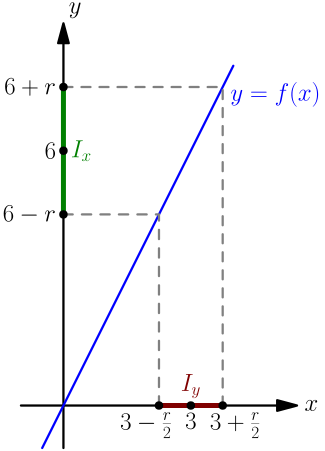
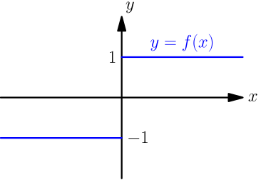

Limit Properties¶
Make sure that you know the definition of the limit.
Simple Example¶
We prove that $\lim_{x \to 3} 2x = 6$.
Let $f(x) = 2x$. Now we want to show that for any open interval $I_y$ centered at $6$, there is some open interval $I_x$ centered at $3$ such that $$ f(\text{any number in $I_x$ except $3$}) \in I_y. $$ Let $I_y$ be any open interval centered at $6$. We can write it as $$ I_y = (6-r, 6+r), $$ where $r > 0$ is the "radius" of $I_y$.
We need to show that there is some open interval $I_x$ centered at $3$ such that something happens. This means that we can choose $I_x$ however we want. I'll choose $$ I_x = \left( 3 - \frac{r}{2}, 3 + \frac{r}{2} \right), $$ which is an open interval centered around $3$.

Now we need to show that $$ f(\text{any number in $I_x$ except $3$}) \in I_y. $$ Let $x$ be any number in $I_x$ except $3$. This means that $$ 3 - \frac{r}{2} < x < 3 + \frac{r}{2}, \quad x \ne 3. $$ By multiplying both sides of the inequality by $2$, we get $$ 6 - r < \underbrace{2x}_{f(x)} < 6 + r, $$ which shows that $f(x) \in I_y$. So, if $x$ is any number in $I_x$ except $3$, then $f(x)$ is in $I_y$. This concludes the proof.
If this proof feels too difficult, don't give up now; we will find much easier ways to calculate limits later, and that will make math fun again.
Limit Might Not Exist¶
Not all functions have a limit! For example, let $$ f(x) = \begin{cases} 1, & \text{if $x \ge 0$}; \\ -1, & \text{if $x < 0$}. \end{cases} $$ This function "jumps" at $x=0$:

What can we say about $\lim_{x \to 1} f(x)$?